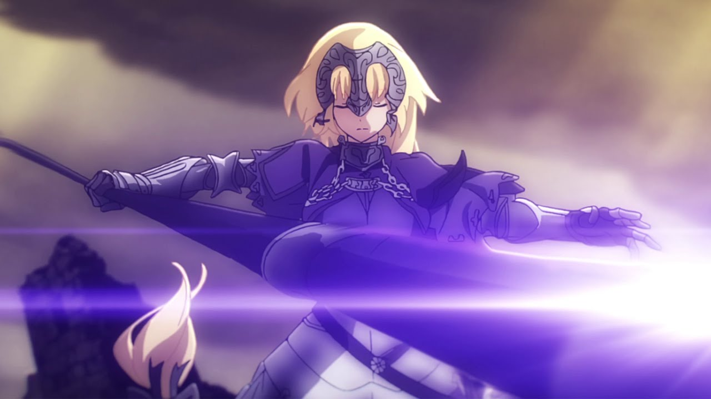
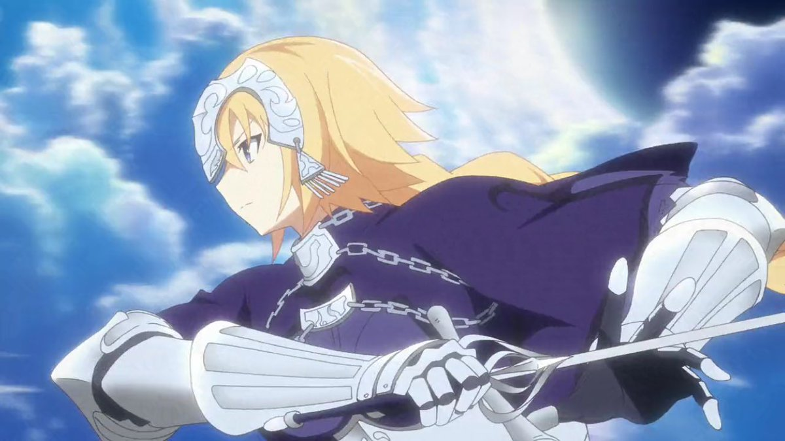
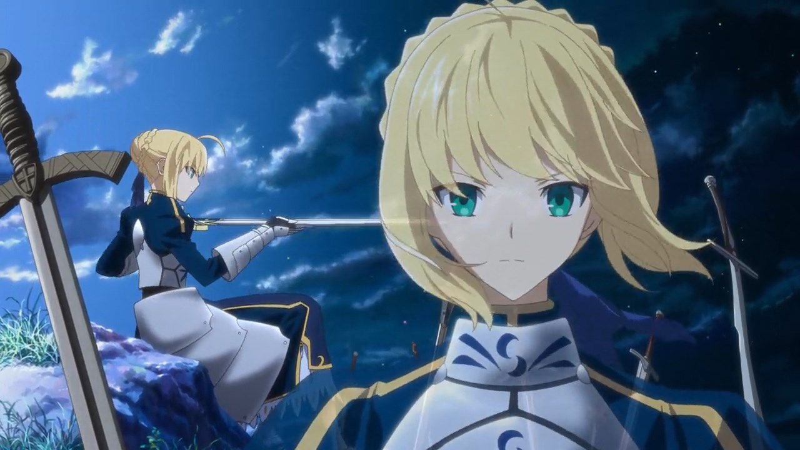
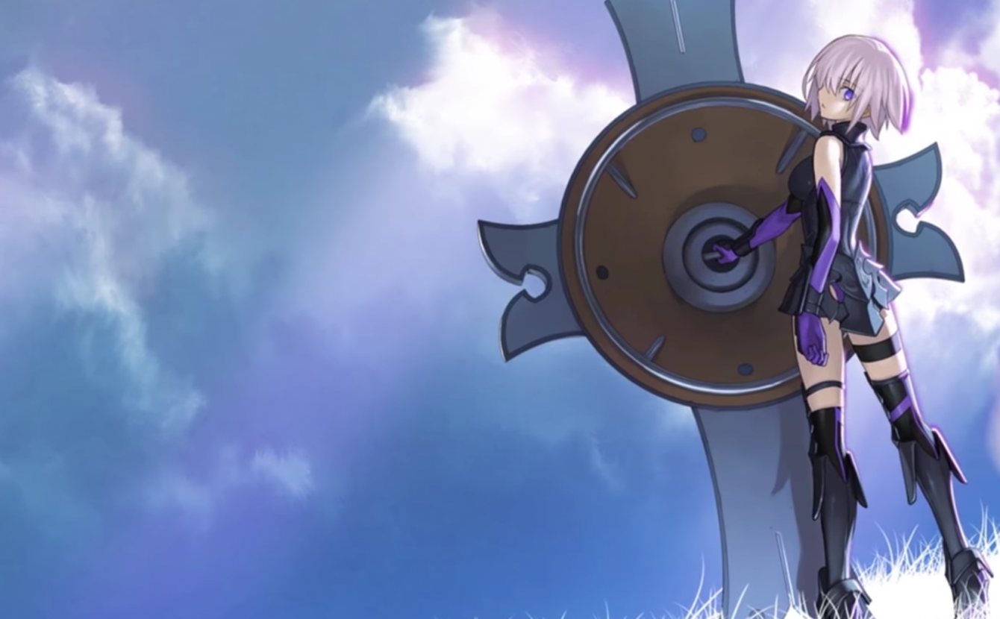
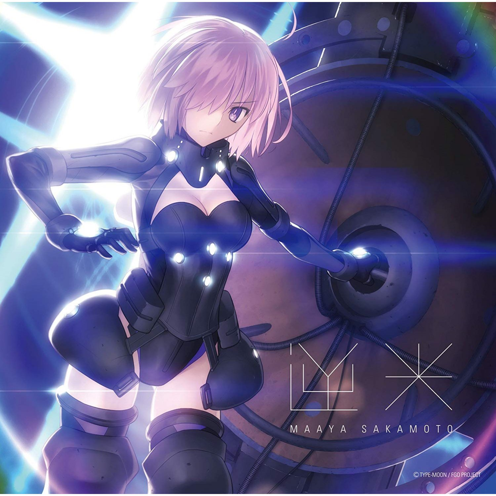
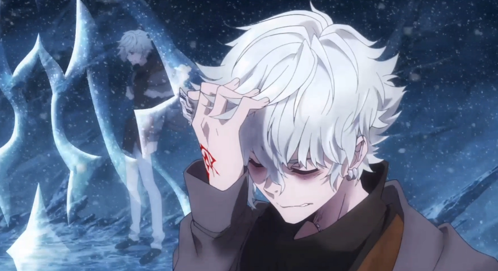

Congratulations! You are free Now ! Game will be Restart after you click play again
Welcome to ShiZhao's Project two game. If you dont understand how to play, you can always type "help" for a list of commands that you can use.
Help: (replace italicized words)
take item: takes the item and puts it in to your inventory
eat food: eats indicated food item
kill creature with item: kills indicated creature with specified item
inventory: lists everything you are currently carrying
unlock door with itemex: unlocks jail door with the paper clip
go direction: the way you want to go (north, east, south, west)
search item: searches the indicated object for items
 You wake up and found out you sleep in an room you have never been it looks like a jail. You see a door at north. You tried to open it but it is locked. You looking around and found a lunch tray from the day's meal looks like dead bugs. A paper clip is on the tray too.
 You have entered a hallway. To the west and to the east are dark, and the south is where you just come from. The only source of light is a torch hanging on the wall.You want to take it with you so you get closer. After you get near by the torch. You found a mysterious note. You can read it now.
You have entered a room looks like bigger the last one. After a quick observation, you found a table in the corner, a whip hanging on the wall and Strange devices hanging from walls and ceilings. There is a door at south.The west is where you came from.
 After you turning to suth, you begin to hear some noises. When you enter the room, you see a tiger there. Also he looks like hungry.
 You moveing to west, you come upon a junction. North and South are some dark rooms. You came from the East.
You enter a room with a strange door. The door appears to lead somewhere, but it also looks locked. Upon closer inspection, you discover that a key is required to open it as you thought. To the south is where you came from.
 You enter a old room which looks like a storage. It is empty except for a crate in the corner. It looks like it hasn't been touched in years.
 You meet a real servant from FGO, However he is evil you died.
You meet a real servant from FGO. Lucky you are he is the face of Justice You are a real master NoW!